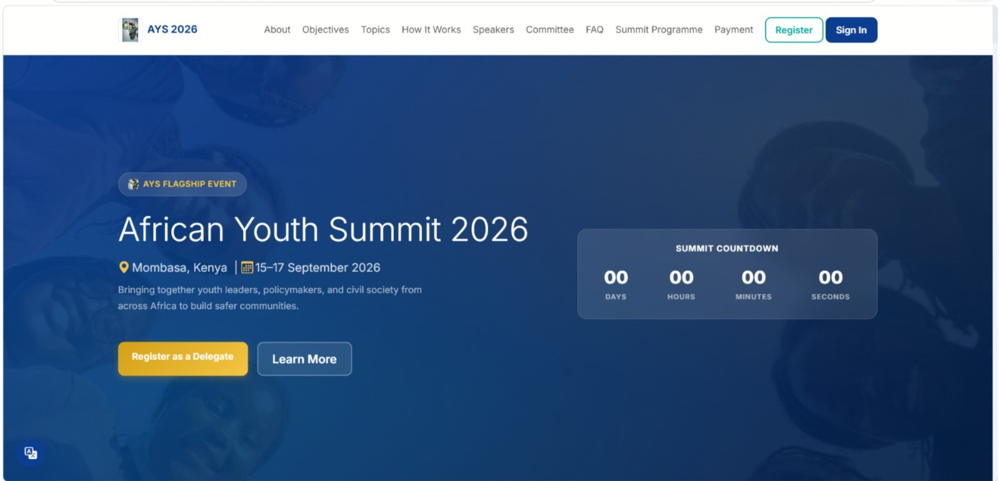
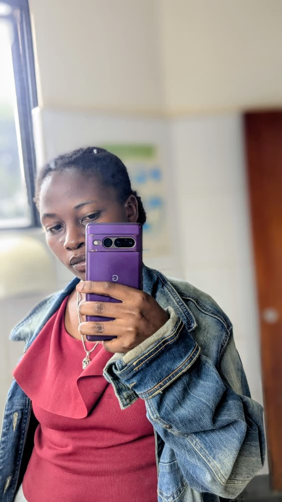
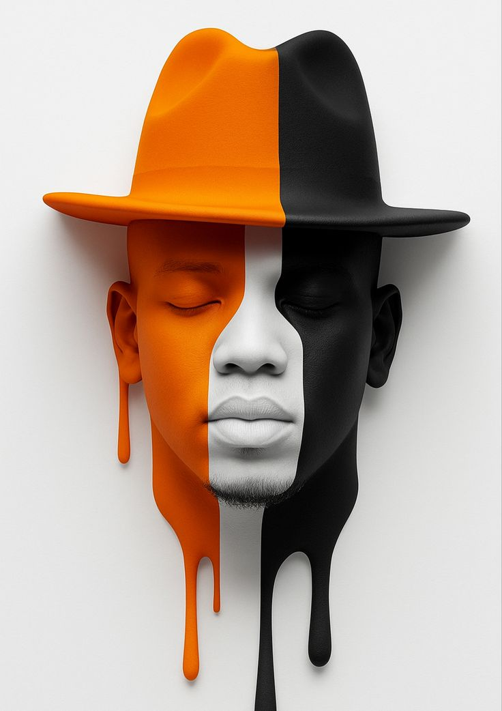

Built a functional web application for managing chick orders, farmers, feeds, and users. Implemented different user roles and features for managing information and supporting the daily operations of the platform.

Built a web application for conference registration and delegate management. Implemented registration, user management, and administrative features for handling participant information and supporting the organization of the event.

Designed and developed a personal portfolio website to showcase my skills, experience, and projects. Organized the website into different sections to present my background, technical skills, work, and contact information.
Built a booking website for managing and displaying booking information online. Implemented the main website pages and interactive features to provide users with a simple way to view information and make bookings.
Developed and managed an e-commerce website for displaying products and supporting online store activities. Used WordPress, WooCommerce, and Elementor to create the website, organize products, and manage the store.
Designed and built a website using Webflow to create a simple and modern online presence. Organized the content and pages to provide a clear layout and an easy browsing experience for visitors.
Built a business website from scratch using HTML and CSS for an automobile business. Created the main pages and organized the content to present the business information and available services in a simple way.
Set up a virtual network environment using VirtualBox, Windows Server, and client machines. Configured DNS, DHCP, LDAP, domain users, groups, and permissions to manage the network and connected computers.

Designed and built an online art gallery for displaying digital artwork and illustrations. Organized the website to present the artwork clearly while focusing on a simple layout, visual presentation, and easy navigation.